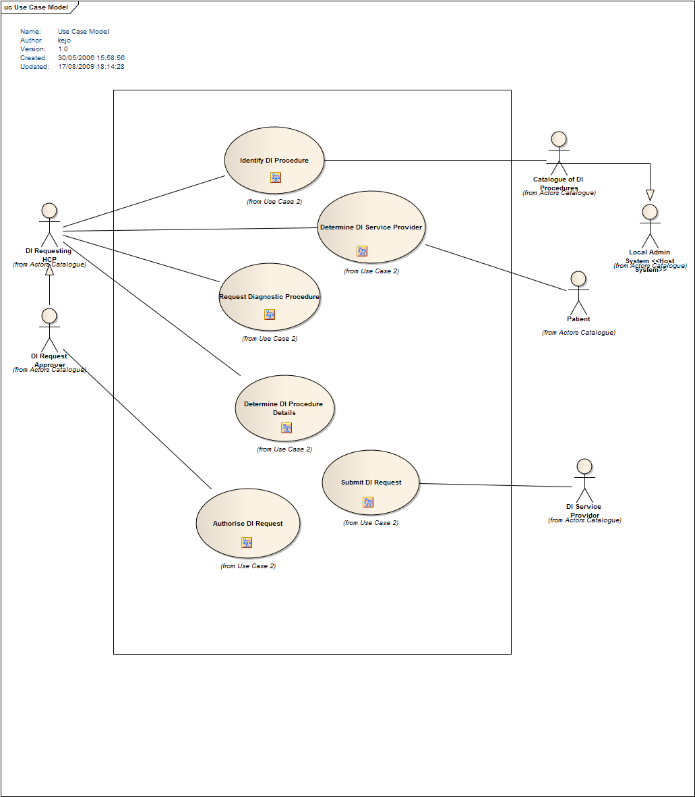

“A UML Use Case Model is a modelled configuration of Use Case Elements and their related Actor roles, for a discrete business
subset. Use Case Model are elaborated using UML Use Case Diagrams; these represent the Interactions between user roles (Actor
Elements) and system functionality (Use Case Elements)”
use case diagram example
A typical Use Case Diagram representing the Associations between its Actor and Use Case elements (Diagram also has a Boundary
Region)
The purpose of a Use Case Model is to capture and represent the functional requirements of a system or discrete business subset
for a domain.
A Use Case Model is a conceptual idea that is only fully realised when its Use Case and Actor Elements are elaborated together
on a Use Case Diagram; a range of Associations are used to represent the relationships between Use Case and Actor elements.
The Model may develop iteratively as more information about the proposed system or architecture becomes available. The Use
Case Diagram allows the scope of the domain to be presented in a visual format.
A UML Use Case Model is held within a named model package, which contains:
|
• |
Use Case Diagram(s) — provides visual representations / elaborations of the Use Case Model:
|
– |
Use Case Diagrams represent a complete and discrete process, representing how the individual actions and roles within a process
interact with, or are triggered by each other.
- The modelling of the individual steps that together achieve a discrete process represented by a single Use Case element
can be represented using a UML Activity Diagram.
|
|
|
• |
Use Case Elements — describe the interaction of discrete units of work (use cases) with actor roles (as well as with other use case elements):
|
– |
Use Case Elements can be held within an Analysis Model in one of two ways:
|
♦ |
In a single package location within the model (e.g. as a Catalogue Package). |
|
♦ |
Or, held within various locations across the model in packages used to define its organising structure (this makes a Use Case
Model a more conceptual entity) |
|
|
– |
Use Case Elements are elaborated on Use Case Diagrams. |
|
– |
These can be further defined with metadata settings for: Triggers, Basic / Alternate Paths, Goals and Pre / Post Conditions. |
|
– |
Composite Use Case Elements — as an alternate notation (with a spectacle symbol) based on a Use Case Element may also be applied to a Use Case Element
to link it to a separate diagram that further elaborates the ‘parent’ use case.
|
|
|
• |
Use Case Diagrams are also further elaborated with:
|
– |
Actor Elements — these represent the user of the system (can be either a human role, a machine or other system) —
|
♦ |
Actor Elements can also be held in a single model package location (e.g. as a Catalogue Package), within the Use Case Model package, or other model packages. |
|
|
– |
Boundary Regions — enclose the Elements that represent the ‘system’ functionality, as well as defining where Actor roles (Actors) interface
with it. |
|
– |
Associations — a range of different Association types define the relationships between Use Cases and Actor Elements. |
|
The construction of a UML Use Case Model is further defined by its Core Notations.
Types of UML Use Case Model derived ArtefactsTypes of UML Use Case Model derived Artefacts
The types of UML Use Case Model related / derived artefacts and modelling entities currently defined for use by the Data Products Analysis Methodology include: